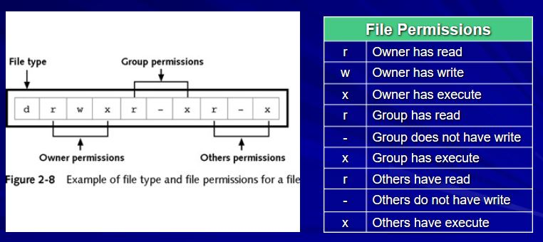
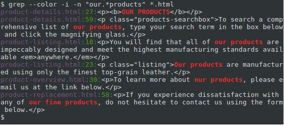
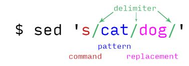

Scripting in Practice
Unix Commands in Practice
Recall from last week: The Shell is the interface between the user and the OS
Viewing Files
catdisplays a whole file at a timemoredisplays a file one screen at a time, allowing scrolling downlessdisplays a file one screen at a time, allowing scrolling down and upheaddisplays the first few linestaildisplays the last few lines
File Permissions
The following is a recap of Unix file permissions:

- You will need to use
chmodto change permissions of any file. - This will be necessary to execute your scripts.
Redirection
You can use redirection operators to retrieve input from something other than the standard input device and send output to something other than the standard output device
Examples of when you might consider using redirection:
- Redirect the
lscommand output to a file, instead of to the monitor (or screen) - Redirect a program that receives input from the keyboard to receive input from a file instead
- Redirect error messages to files, instead of to the screen by default
Redirection using
>- The greater than sign (
>) is called a redirection symbol - Create a new file or overwrite an existing file by attaching
>to a command that produces output
- The greater than sign (
Redirection using
>>
* To append to an existing file, use two redirection symbols `>>`Pipe operator |
Redirects the output of one command to the input of another command, for example:
$ ls /etc | sort -rOther common commands
- Combining files using output redirection
cat - Sort data using the
sortcommand
and please refer to Week 1 notes for further details and commands..
_
What is grep
- stands for global regular expression print
grepis a powerful file pattern searcher that comes equipped on every distribution of Linux If for whatever reason it isn't installed then install now:$sudo apt-get install grepgrepsearches for a specific pattern of characters within its input. If the pattern is found, it displays the line containing it.- The pattern is more generally known as a regular expression, which allows for wildcards, etc.
$ grep [OPTIONS] PATTERN [FILE...]Some examples of the use of grep
You want to quickly search for "caroline cahill" in a particular file "lecturerNames.txt" on your machine.
$ grep "caroline cahill" lecturerNames.txtyou want the matches to be highlighted in colour (--color):
$ grep --color "caroline cahill" lecturerNames.txtyou want to show where the matching line appears (-n):
$ grep --color -n "caroline cahill" lecturerNames.txtyou want grep to be case insensitive (-i):
$ grep --color -n -i "caroline cahill" lecturerNames.txtyou want grep to search all .txt files in your directory, you can use a wildcard (*.txt):
$ grep --color -n -i "caroline cahill" *.txtyou want to extend your search to subdirectories and any files they contain, using -r to recursively search and consider using a wildcard to allow to search in any file:
$ grep --color -n -i -r "caroline cahill" *you have an entire folder full of music files in a bunch of different formats. You want to find all of the *.mp3 files from the artist Kodaline, but you don’t want any of the remixed tracks
$find . –name “*.mp3” | grep –i Kodaline | grep –vi “remix”
we are using find to print all of the files with a *.mp3 extension, piping it to grep –i to filter out and prints all files with the name “Kodaline” and then another pipe to grep –vi which filters out and does not print all filenames with the (case insensitive) string “remix”.
Matching Regular Expressions
(That's what the "re" in "grep" stands for after all!)
Regular expressions use special characters in the PATTERN string to match a wider array of strings
For example: 
For the above example, the command used (in the screenshot directly above) is:
$ grep --color -i -n "our.*products" *.html- the period
.is interpreted as a single-character wildcard - The asterisk
*means "the preceding character, appearing zero or more times, will match."
So the combination .* will match any number of any character.
Using grep to search for errors
$ grep "Sept 11 03" /etc/httpd/logs/error_logSearch the error_log file for any error entries that happened on Sept 11th at 3AM
Combining grep with other commands
This will make grep more powerful, for example combining with head or tail and so on
Grep versions
grep- supports basic regular expressionsegrep- supports extended regular expressionsfgrep- search for fixed strings
For the use of Unix kill process, you must provide the process id for the process that you want to kill.
- For example: you want to kill a running Firefox process:
$pgrep firefox
12160will return the process id 12160 of the firefox process running
$kill 12160will kill this process i.e. firefox
Be creative, experiment with the options in the man page, and come up with grep expressions that serve your own purposes!
_
What is awk?
awk is an entire text-processing language, but it is also very useful for some small tasks, such as for extracting pieces of text from a line returned by grep.
awkis a versatile programming language for working on files.awkis an excellent filter and report writerawkunderstands the same arithmatic operators as Cawkhas string manipulation functions, so it can search for particular strings and modify the outputThe essential organization of an
awkprogram follows the form:
$pattern { action }EXERCISE: Create a file called cities and edit using the nano editor
$ nano cities
Dublin, Ireland
London, UK
Oslo, Norway
Lisbon, Portugal$ sort cities
Dublin, Ireland
Lisbon, Portugal
London, UK
Oslo, NorwayThen try the following three basic commands:
$ grep on cities | awk '{print $2}'$ grep on cities | awk '{print $1}'$ grep on cities | awk –F, '{print $1}'EXERCISE: Create a space separated file called employee.txt that contains the following records:
100 Frank Manager Sales €5000
200 Caroline Developer Technology €5500
300 Mary Sysadmin Technology €7000
400 Rosanne Manager Marketing €9500
500 Eamonn DBA Technology €6000Amend the code below, where suitable, to extract the expected result from your employee.txt file created:
Print the fifth column in a space separated file:
$awk '{print $5}' filenamePrint the second column of the lines containing "something" in a space separated file:
$awk '/something/ {print $2}' filenamePrint the third column in a comma separated file:
$awk -F ',' '{print $3}' filenameSum the values in the first column and print the total:
$awk '{s+=$1} END {print s}' filenameor try this:
$awk '{s+=$1; print $1} END {print "--------"; print s}' filename
Quick Question: If you amend this code to sum the values in the last column... do you get the expected result?
Some other useful commands, courtesy of github.com:
Recreate a table.txt file shown here (Note the file is stored in a text directory i.e. text/table.txt):
rank length text
1 36 How quickly daft jumping zebras vex.
2 38 Jackdaws love my big sphinx of quartz.
3 44 The quick brown fox jumps over the lazy dog.
- the last command is used with a
numbers.txtfile that you can create - it simply contains one column with random numbers
_
What is sed?
sedis the ultimate stream editorsedis a special editor for modifying files automatically. If you want to write a program to make changes in a file, sed is the tool to use.sedallows you to make global changes to a large file- requirements are an input file and a command that lets sed know what actions to apply to the file
sedcommands have two general formats:
- specify an editing command on the command line
- specify a script file containing sed commands
When might I choose to use sed?
- the sed command is most commonly used in UNIX for substitution or for find and replace.
- In the situation where we are manually making the same edits on multiple files. Sometimes the same edits are manually repeated on files on different servers - this process can be very tedious and time consuming.

- One of the most common
sedcommands is the s for substitution .
A simple example is changing "day" in the "old" file to "night" in the "new" file:
$ sed 's/day/night/' <old >new- The
sededitor changes exactly what you tell it to. So if you executed
echo Sunday | sed 's/day/night/'This would output the word "Sunnight" because sed found the string "day" in the input.
- Note that this
sedwill replace once on each line. That is the default behavior. If you want something different, you will have to use some of the options that are available.
Quoting multiple sed lines in BASH
The Bourne shell makes this easier as a quote can cover several lines:
#!/bin/sh
sed '
s/a/A/g
s/e/E/g
s/i/I/g
s/o/O/g
s/u/U/g' <old >newWhen in doubt, experiment!!!
_
Quotes
There are four different types of quote characters that the shell recognises:
The single quote character '
The double quote character "
The backslash character \
The back quote character `
EXERCISE: Create a space separated file called phonebook that contains the following records:
Frank Walsh 0861234567
Caroline Cahill 0867645321
Frank Honest 0872468248
Casandra Birney 0879876543
Eamonn DeLeaster 0831234567Now try the following commands:
$grep Caroline phonebook$grep Frank phonebook$grep Frank Walsh phonebookWhat happens with this output??
NOTE: The shell uses white space to separate the arguments on the line so Frank, Walsh and phonebook are all passed as three separate arguments.
Use of the single quote '
Multiple words can be enclosed in single quotes to prevent them being interpreted as separate arguments:
$grep 'Frank Walsh' phonebookUse of the backslash \
The backslash is an escape character that preserves the literal value of the following character - assuming the shell recognises the following character as a special character such as backslash, single quotes, double quotes, dollar sign and so on...
It protects characters for the shell interpreting them
Use of the back quote
tell the shell to execute the enclosed command and to insert the output from the point on the command line
Here, the shell executes
dateand replacesdateon the command line with the output of date:$ echo The date and time is: `date` The date and time is: Thu Sept 24 18:50:52 IST 2018
Command Line Arguments
Shell programs can process arguments passed to them
via the command line
Every time we have executed a shell program, the shell has automatically stored all the proceeding arguments in what is referred to as positional parameters, namely 1, 2, 3, etc.
These parameters (arguments) can be referenced using the $ sign
Example of a program to find processes running on the system
$ nano findproc
ps -ef | grep $1(save, exit and make findproc executable)
Execute as follows:
$ ./findproc bashExecute again passing your username as the argument and see the results.
The $# Variable
Whenever you execute a shell program, the special shell variable $# is set to the number of arguments that were passed to the script on the command line.
Create the shell program.
$ nano args
echo $# arguments passed
echo arg 1 = $1 arg 2 = $2 arg 3 = $3(save, exit and make args executable)
- Execute the script passing in sample arguments, such as
a,bandc - Execute the script passing in sample arguments, such as
"a b c" - Execute the script passing in only two sample arguments
- Execute the script passing in zero sample arguments